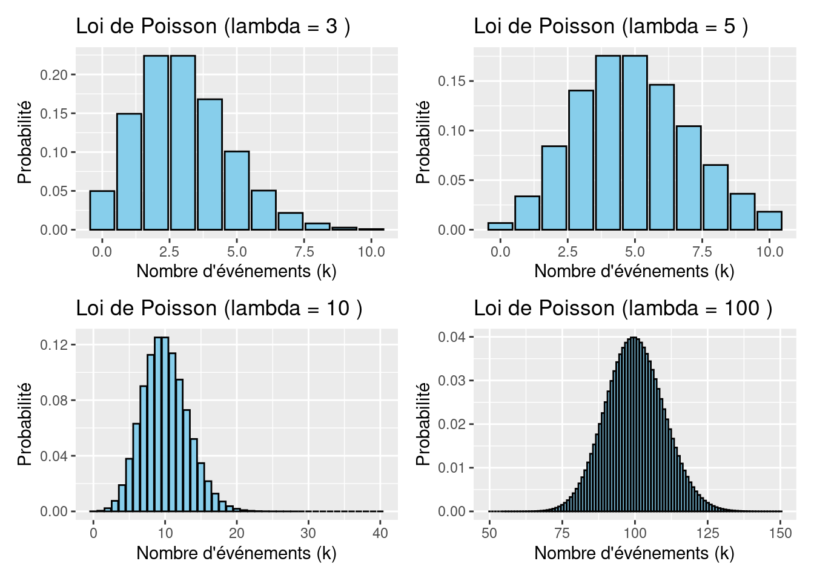
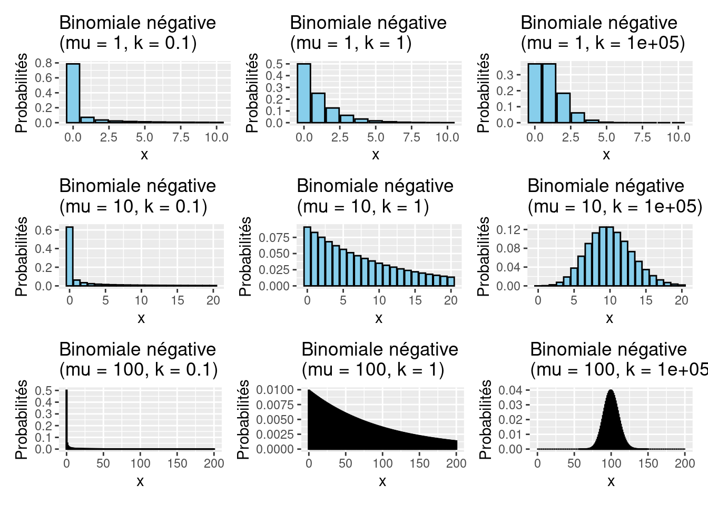
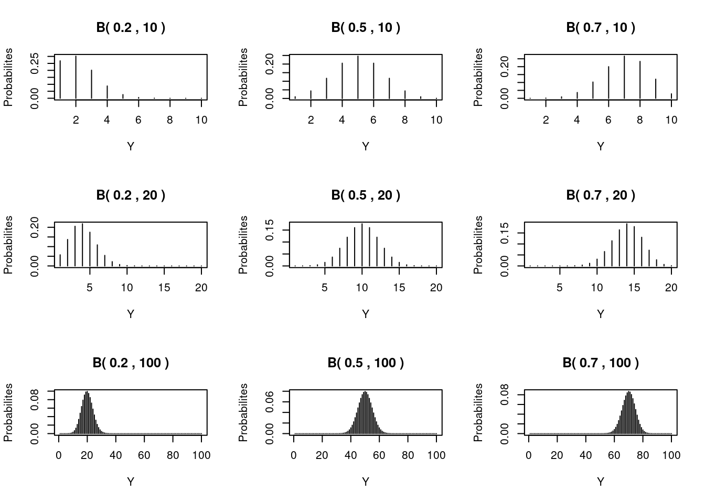
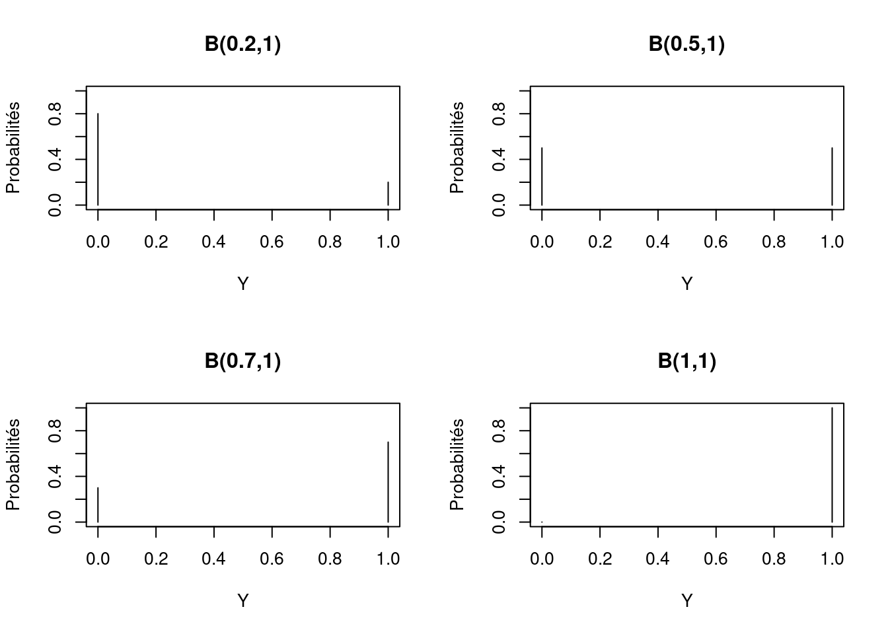

6 La famille des lois exponentielles
6.1 Introduction
Dans les chapitres précédents, la régression linéaire et la modélisation additive ont été abordées. Dans les chapitres suivants traitent des techniques de modélisation linéaire généralisée (GLM) et de modélisation additive généralisée (GAM). Dans la régression linéaire et la modélisation additive, nous utilisons la distribution normale (ou gaussienne). Il est important de comprendre que cette distribution s’applique à la variable réponse. La GLM et la GAM sont des extensions de la modélisation linéaire et additive en ce sens qu’une distribution non gaussienne est utilisée pour la variable réponse et que la relation (ou le lien) entre la variable réponse et les variables explicatives peut être différente. Dans ce chapitre, nous nous concentrons sur le premier point, la distribution.
De nombreuses raisons justifient l’utilisation de la GLM et de la GAM au lieu de la régression linéaire et de la modélisation additive. Les données d’absence-présence sont (généralement) codées comme 1 et 0, les données proportionnelles sont toujours comprises entre 0 et 100 % et les données de comptage sont toujours non négatives. Les modèles GLM et GAM utilisés pour les données 0-1 et proportionnelles sont généralement basés sur les distributions de Bernoulli et binomiale et, pour les données de comptage, les distributions de Poisson et binomiale négative sont des options courantes. Pour les données continues, la distribution gaussienne est la plus utilisée, mais vous pouvez également utiliser la distribution gamma. Ainsi, avant d’utiliser les GLM et les GAM, nous devons nous concentrer sur les questions suivantes: Que sont ces distributions, à quoi ressemblent-elles et quand les utiliser ? Ces trois questions constituent la base de ce chapitre. Nous consacrons un chapitre entier à ce sujet car, d’après notre expérience, peu de nos étudiants sont familiarisés avec les distributions de Poisson, binomiale négative ou gamma, et un certain niveau de familiarité est nécessaire avant d’entrer dans le monde des GLM et des GAM dans le chapitre suivant.
Comme nous le verrons dans le chapitre suivant, un GLM (ou GAM) se compose de trois étapes : (i) le choix d’une distribution pour la variable réponse, (ii) la définition de la partie systématique en termes de covariables, et (iii) la spécification de la relation (ou : lien) entre la valeur attendue de la variable réponse et la partie systématique. Cela signifie que nous devons nous arrêter un instant et réfléchir à la nature de la variable réponse.
6.2 La loi normale
6.3 La loi de Poisson
La loi de Poisson (Poisson, 1837) est une loi de probabilité discrète qui décrit le comportement du nombre d’événements se produisant dans un intervalle de temps fixé, si ces événements se produisent avec une fréquence moyenne ou espérance connue, et indépendamment du temps écoulé depuis l’événement précédent.
Soit \(\lambda > 0\), on dit qu’une variable aléatoire \(X\) suit la loi de Poisson de paramètre \(\lambda\), ce que l’on note \(X \hookrightarrow \mathcal{P}(\lambda)\) si \(X(\Omega) = \mathbb{N}\), pour tout \(k \geq 0, P(X = k) = e^{-\lambda}\frac{\lambda^k}{k!}\).
Cette formule spécifie la probabilité de \(k\) avec une moyenne \(\lambda\). Notez que \(k\) doit être une valeur entière, sinon la formule n’est pas définie. Une fois que nous connaissons \(\lambda\) , nous pouvons calculer les probabilités pour différentes valeurs de \(k\). Par exemple, si \(\lambda = 3\) la probailité que \(\lambda = 1\) est donnée par \(3 \times \frac{e^{-3}}{1!} = 0,149\).
Pour les petits \(\lambda\), la courbe de densité est asymétrique, mais pour les \(\lambda\) plus grands, elle devient symétrique. Notez que \(\lambda\) peut-être un nombre non entier, mais que les \(k\) doivent être non négatifs et entiers. D’autres caractéristiques de la distribution de Poisson sont que \(P(Y<0) = 0\)et que la moyenne est la variance, selon la formule suivante: \(E(X) = \lambda\) et \(V(X) = \lambda\).
La distribution de Poisson est généralement utilisée pour les données de comptage, et ses principaux avantages sont que la probabilité de valeurs négatives est de 0 et que la relation de variance moyenne permet de tenir compte de l’hétérogénéité. Toutefois, en biologie, il est assez courant d’avoir des données pour lesquelles la variance est encore plus grande que la moyenne, ce que l’on appelle la sur-dispersion. En fonction de cette valeur, il peut être avantageux d’utiliser une distribution différente telle que la distribution négative binomiale.
6.4 La loi binomial négative
Une loi binomiale négative est la distribution de probabilité discrète du nombre d’échecs dans une série d’épreuves de Bernoulli indépendantes et identiquement distribuées jusqu’à avoir un nombre fixe \(n\) de succès.
\[\mathbb{P}(X=k) = f(k;n,p) = \binom{k+n-1}{k}p^nq^k, \forall k=0,1,...\] La moyenne et la variance sont donnés par \(E(X) = \frac{nq}{p}\) et \(var(X) = \frac{nq}{p^2}\)

Comme pour la distribution de Poisson, les observations avec la valeur zéro sont autorisées dans la distribution binomiale négative. Il faut aussi noter que pour une petite moyenne \(\mu\) et une grande sur-dispersion (petit \(k\)), la valeur 0 a de loin la probabilité la plus élevée.
6.5 La loi Gamma
La loi de Gamma peut-être utilisée pour une variable réponse \(Y\) qui ont une valeur positive (\(Y > 0\)), et les fonctions de distribution a plusieurs formes différentes. Cependant, nous utiliserons la fonction suivante:
\[f(y; \mu, \nu) = \frac{1}{\Gamma(\nu)} \times \binom{\nu}{\mu}^\nu \times y^{\nu-1} \times e^{\frac{y \times \nu}{\mu}}, y > 0\] Avant de commencer à mémoriser la définition mathématique exacte de cette fonction de densité, examinons d’abord la moyenne et la variance d’une variable \(Y\) qui est distribuée de manière gamma et esquissons la courbe de densité pour différentes valeurs de \(\mu\) et \(\nu\) (qui est l’équivalent du \(k\) dans la distribution binomiale négative). La moyenne et la variance de \(Y\) sont \(E(Y) = \mu\) et \(var(Y) = \frac{\mu^2}{\nu}\).
La dispersion est déterminée par \(\nu^{-1}\); une petite valeur de \(\nu\) (par rapport à \(\mu^2\)) implique que la dispersion des données est importante. Pour un grand \(\nu\), la distribution gamma devient en forme de cloche et symétrique. Dans ce cas, la distribution gaussienne peut également être utilisée.
6.6 La loi de Bernoulli et la loi binomiale
Les deux dernières distributions que nous examinons sont la distribution de Bernoulli et la distribution binomiale, et nous commençons par cette dernière. Dans un cours de statistique de première année, elle est souvent présentée comme la distribution utilisée pour étudier le lancer d’une pièce de monnaie. Supposons que vous sachiez qu’une pièce est équilibrée (personne ne l’a manipulée et la probabilité d’obtenir un face est la même que celle d’obtenir la pile), et que vous la lanciez 20 fois. La question est de savoir combien de faces vous attendez? Les valeurs possibles sont comprises entre 0 et 20. Évidemment, la valeur la plus probable est 10 faces. En utilisant la distribution binomiale, nous pouvons dire quelle est la probabilité que vous obteniez 0, 1, 2, . . ., 19 ou 20 faces.
Une distribution binomiale est définie comme suit. Nous disposons de N essais indépendants et identiques, chacun ayant une probabilité \(P(Y_i = 1) = \pi\) de succès et une probabilité \(P(Y_i = 0) = 1 - \pi\) d’échec. Les étiquettes «succès» et «échec» sont utilisées pour les résultats 1 et 0 de l’expérience. Le terme «succès» peut être assimilé à \(P(Y_i = face)\) et le terme «échec» à \(P(Y_i = pile)\). Le terme «indépendant» signifie que tous les lancers ne sont pas liés. Le terme identique signifie que chaque lancer a la même probabilité de réussite. Sous ces hypothèses, la fonction de densité est donnée par \[f(y; \pi) = \binom{N}{y} \times \pi^y \times (1 - \pi)^{N-y}\]
La probabilité pour chaque valeur de \(y\) entre 0 et 20 pour l’exemple du lancer peut être calculée avec cette fonction de probabilité. Par exemple, si \(N = 20\) et \(π = 0,5\), la probabilité de mesurer 9 faces est de \((20!/(9! × 11!)) × 0.5^9 × (1 - 0.5)^{11}\). Comme prévu, la valeur \(y = 10\) a la probabilité la plus élevée, mais 9 et 11 ont des probabilités très similaires.
L’espérance et la variance de distribution binomiale est donnée par: \[E(Y) = N \times \pi\] et \[var(Y) = N \times \pi \times (1 - \pi)\]
En biologie, on pourrait prendre l’exemple d’un un élevage de poulets et prélevons des échantillons de \(N\) animaux pour détecter la présence ou l’absence d’une maladie particulière. Dans ce type de recherche, on veut connaître la probabilité \(π\) qu’un animal donné soit infecté par la maladie.

Une distribution de Bernoulli est obtenue si \(N = 1\); par conséquent, nous ne lançons qu’une fois ou nous n’échantillonnons qu’un seul animal de la ferme. Quatre distributions de Bernoulli avec \(\pi = 0,2\), \(\pi = 0,5\), \(\pi = 0,7\) et \(\pi = 1\) sont données dans la figure précédente. Il faut noter que l’on obtient uniquement des valeurs de 0 pour l’échec et 1 pour le succès. En général nous ne faisons aucune distinction entre la loi de Bernoulli et la loi binomiale, et utilisons la notation \(B(\pi, N)\) pour les deux, et \(N=1\) s’applique automatiquement à la loi de Bernoulli.

6.7 Quelle distribution choisir?
Nous avons examiné un grand nombre de distributions pour la variable réponse, mais laquelle devons-nous utiliser ? Ce choix doit, en premier lieu, être fait a priori sur la base des connaissances disponibles sur la variable réponse. Par exemple, si vous modélisez la présence et l’absence d’animaux sur des sites \(M\) en fonction de quelques covariables, votre choix est simple : la distribution binomiale doit être utilisée car votre variable réponse contient des zéros et des uns. C’est probablement le seul scénario où le choix est aussi évident. Cela dit, si nous agrégeons la réponse en groupes, nous avons (peut-être) une distribution de Poisson. Si vos données sont des comptages (d’animaux, de plantes, etc.) sans limite supérieure, la distribution de Poisson est une option. En effet, les comptages sont toujours non négatifs et tendent à être hétérogènes, ce qui est conforme à la distribution de Poisson. En cas de forte surdispersion, la distribution binomiale négative est une alternative à la distribution de Poisson pour les données de comptage. Vous pouvez également utiliser la distribution normale pour les comptages (éventuellement combinée à une transformation des données), mais la distribution de Poisson ou la distribution binomiale négative peuvent être plus appropriées. Toutefois, la distribution normale n’exclut pas les réalisations négatives.
Il est également possible d’avoir des comptages avec une limite supérieure. Par exemple, si vous comptez le nombre d’animaux d’une ferme qui sont infectés par une maladie, sur un total de \(N\) animaux. Le nombre maximum d’animaux infectés est alors \(N\). Si vous considérez chaque animal comme un essai indépendant et que chaque animal a la même probabilité d’être infecté, nous sommes alors dans le monde d’une distribution binomiale. Mais que fait-on avec les densités ? La densité est souvent définie comme les nombres (qui sont des comptages !) par volume (ou surface, plage de profondeur, etc.). Elle peut être modélisée par la distribution de Poisson (ou NB) et une variable offset.
Si la variable réponse est une variable continue comme le poids de l’animal, la distribution normale est la meilleure option, mais la distribution gamma peut être un choix alternatif.
Il est important de comprendre que ces distributions concernent les variables de réponse et non les variables explicatives. Le choix de la distribution à utiliser est un choix a priori. Une liste de toutes les distributions discutées dans cette section figure au tableau suivant.
| Distribution | Type de données |
|---|---|
| Normale | Continue |
| Poisson | Données de comptage (entiers) et densité |
| Binomial Négatif | Données de comptage sur-dispersée et densité |
| Géométrique | Données de comptage sur-dispersée et densité |
| Gamma | Continue |
| Binomial | Données proportionnelles |
| Bernoulli | Données de presence-absence |
Si vous hésitez entre deux distributions concurrentes, par exemple la distribution normale et la distribution gamma, ou la distribution de Poisson et la distribution binomiale négative, vous pouvez tracer la moyenne en fonction de la variance de la variable réponse et voir quel type de relation moyenne-variance vous avez et sélectionner une fonction de distribution en conséquence.